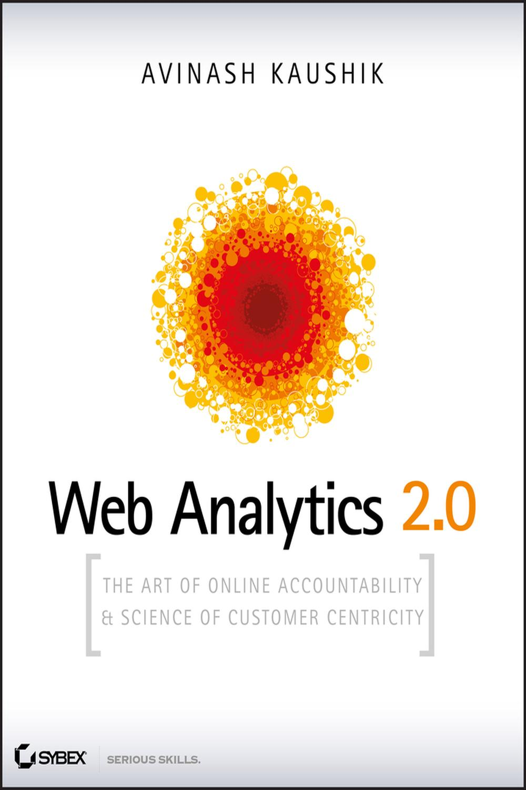
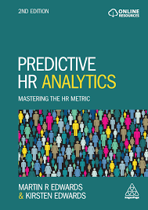
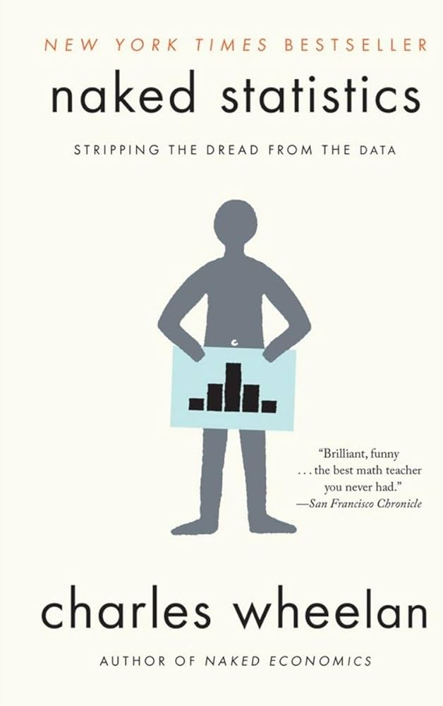
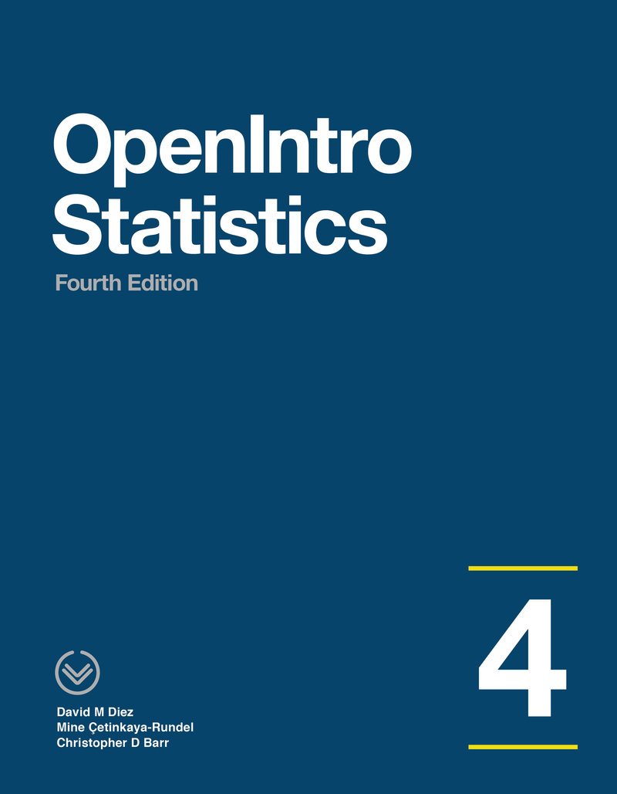
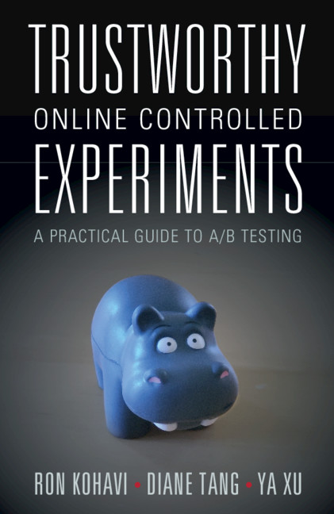
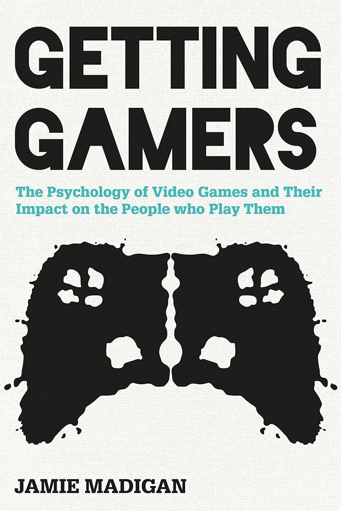
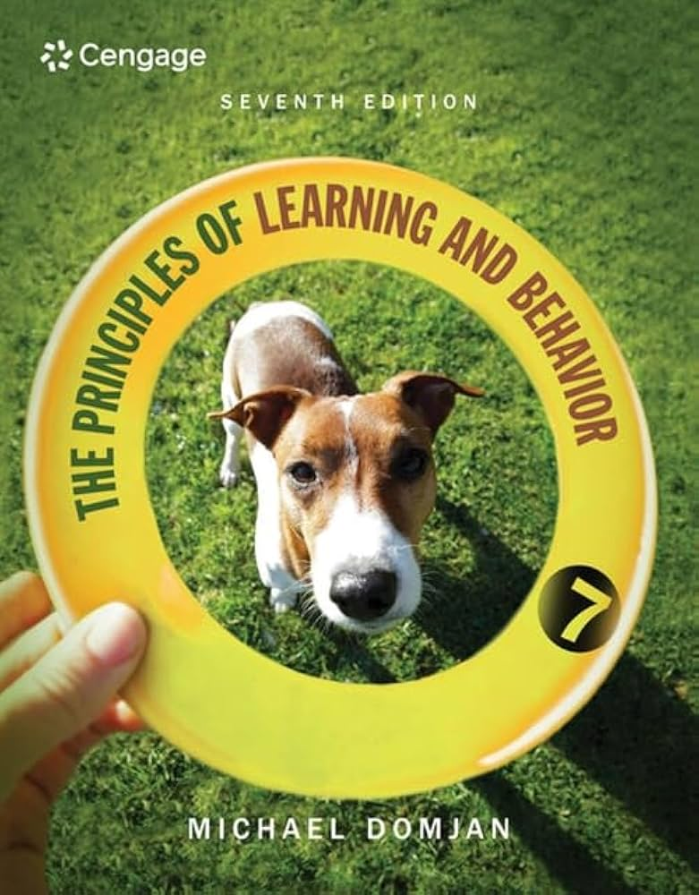
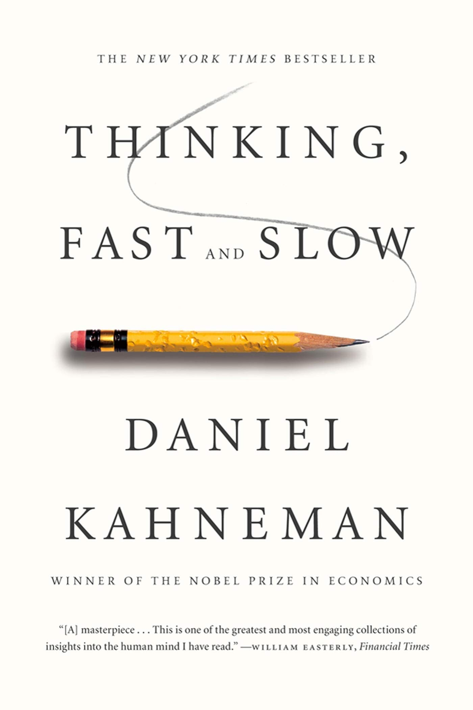
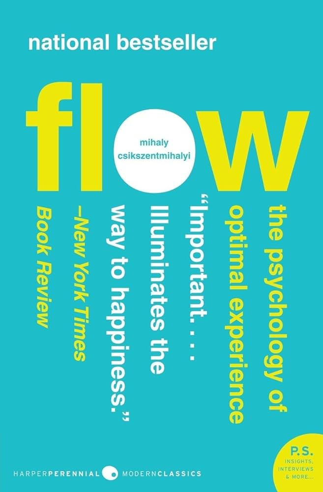

Books
Product library.
Books I have read and found valuable for my future work: analytics, statistics, psychology, experimentation and game UX.
Product & Game Analytics

Web Analytics 2.0
People / HR Analytics

Predictive HR Analytics

HR Analytics
Statistics

Naked Statistics

OpenIntro Statistics

Trustworthy Online Controlled Experiments
Programming

Python for Data Analysis
Psychology
Self-Determination Theory

Getting Gamers

Principles of Learning and Behavior

Thinking, Fast and Slow
